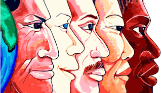
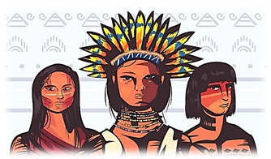
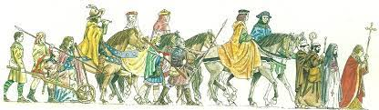
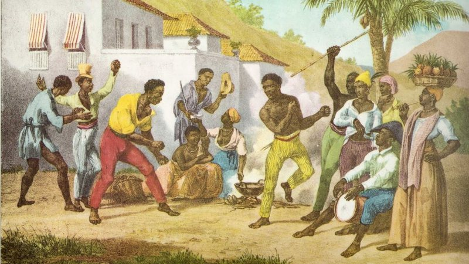

Diversidade Étnica
O Brasil é um dos países mais miscigenados do mundo. Essa diversidade é resultado da contribuição de vários povos na formação da nossa identidade, como os indígenas, os primeiros colonizadores (os portugueses) e imigrantes (franceses, holandeses, italianos, japoneses, alemães entre outros), e os negros vindos da África.
As etnias que formaram a matriz cultural do Brasil ainda estão presentes na cultura do país. É possível afirmar que a primeira miscigenação que aconteceu em nosso país foi entre o branco europeu e os índios brasileiros.
Os negros, que foram trazidos ao país como escravos, constituem o terceiro elemento da formação étnica do Brasil. Já a última fase da miscigenação dos brasileiros aconteceu com a chegada dos imigrantes que substituíram os negros nos trabalhos das fazendas depois da abolição da escravatura.
No último cenário da matriz cultural, que aconteceu na imigração no século XIX, houve uma nova mistura de etnias entre brasileiros, europeus e asiáticos. A partir dessa formação, a cultura brasileira recebeu diversas influências externas que deram origem a nossa rica identidade nacional.
Matriz Indígena
O território que se tornaria o Brasil registra a presença de humanos há cerca de 12 mil anos. Os indígenas ocupavam toda superfície, especialmente o litoral. Desde 1500 até a década de 1970 a população indígena brasileira decresceu acentuadamente e muitos povos foram extintos.
O desaparecimento dos povos indígenas passou a ser visto como uma contingência histórica, algo a ser lamentado, porém inevitável. Não devemos pensar que se tratavam de um único povo, mas sim de várias tribos indígenas, cada uma com sua língua e costumes.
Matriz Europeia (Luso)
Introduziram novos conceitos de sociedade, economia e religião, muito diferentes aos costumes indígenas. Um dos exemplos é a economia: ao invés de plantar para subsistência, agora era preciso cultivar produtos em larga escala que pudessem ser vendidos no mercado europeu. Também trouxeram sua religião e a impuseram aos indígenas.
Através da crença, vieram as festas, o idioma (latim e o português) e uma nova filosofia de vida. Ao invés de vários deuses, agora, adorava-se somente uma divindade, havia um livro para seguir e uma hierarquia de sacerdotes. Além da religião, o português passou a ser o idioma do novo território, assim como a organização política e a economia capitalista.
Matriz Afro
Foram trazidos para serem escravos nas Américas. No entanto, cada indivíduo trouxe seu idioma, sua fé e suas habilidades. Nossa cultura possui muitos elementos africanos. Na culinária, como azeite de dendê, feijoada, acarajé, mungunzá, cocada etc. Na música, sua influência daria a cadência e o ritmo sincopado próprio da música popular brasileira.
Igualmente, na dança, verificamos que o jeito de mover a cintura foi herdada dos africanos, o que originou uma infinidade de bailes como o maxixe e o samba. Os africanos, como os povos iorubás e jejes, trouxeram a religião e seus orixás, que foram misturados com a crença cristã. Isto deu origem aos terreiros de candomblé e, posteriormente, à umbanda no Brasil.